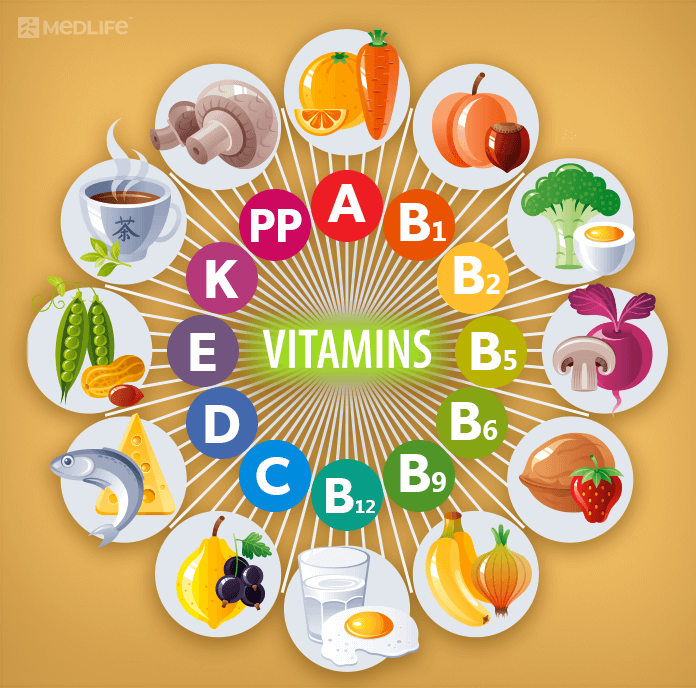

| vitamin | Solubility | Deficiency disease | Food sources |
| Vitamin B1 | water | Beriberi, Wernicke-Korsakoff syndrome | Pork, wholemeal grains, vegetables, potatoes, liver, eggs |
| Vitamin B2 | water | Ariboflavinosis, glossitis, angular stomatitis | Dairy products, bananas, green beans, asparagus |
| Vitamin B3 | water | Liver damage (doses > 2g/day) and other problems | Meat, fish, eggs, many vegetables, mushrooms, tree nuts |
| Vitamin B5 | water | Diarrhea; possibly nausea and heartburn. | Meat, broccoli, avocados |
| Vitamin B6 | water | Impairment of proprioception, nerve damage (doses > 100 mg/day) | Meat, vegetables, tree nuts, bananas |
| Vitamin B7 | water | nothing | Raw egg yolk, liver, peanuts, leafy green vegetables |
| Vitamin B9 | water | May mask symptoms of vitamin B12 deficiency; other effects. | Leafy vegetables, pasta, bread, cereal, liver |
| Vitamin B12 | water | None proven | Meat, poultry, fish, eggs, milk |
| Vitamin C | water | Stomach Pain, Diarrhoea and Flatulence | Many fruits and vegetables, liver |
| Vitamin A | fat | Hypervitaminosis A | from animal origin as Vitamin A / all-trans-Retinol: Fish in general, liver and dairy products; from plant origin as provitamin A / all-trans-beta-carotene: orange, ripe yellow fruits, leafy vegetables, carrots, pumpkin, squash, spinach |
| Vitamin D | fat | Hypervitaminosis D | Eggs, liver, certain fish species such as sardines, certain mushroom species such as shiitake |
| Vitamin E | fat | Possible increased incidence of congestive heart failure. | Many fruits and vegetables, nuts and seeds, and seed oils |
| Vitamin K | fat | Decreased anticoagulation effect of warfarin. | Leafy green vegetables such as spinach; egg yolks; liver |
